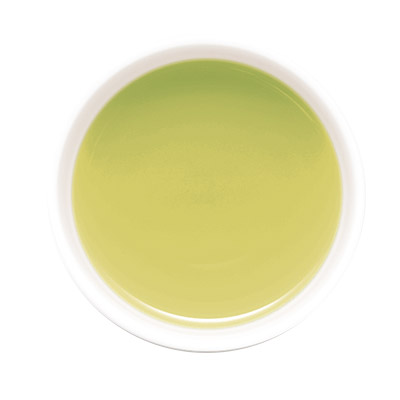
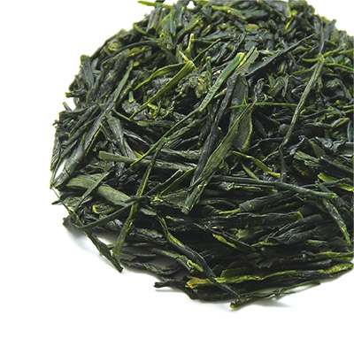

LUPICIA 6476 · g12806476
우지 오쿠미도리 2026
宇治 おくみどり 2026
ウジ オクミドリ
수량한정통신판매한정


宇治伝統の滋味を引き立てるおくみどり品種の個性。
おくみどり品種のみずみずしい青みと香気、宇治伝統の洗練された旨みと滋味が調和します。浅蒸し仕上げの一番茶。
宇治伝統の滋味を引き立てるおくみどり品種の個性。
【品種情報】
しっかりとした味わいと奥深い旨み。口に含んだ後にふわりと鼻に抜ける青みを持った香りは、おくみどりならではの個性です。
抹茶の原料となる「碾茶（てんちゃ）」にも選ばれる、芯のある味わいが特徴です。
【産地情報】
日本の茶文化を牽引してきた歴史と伝統を誇る産地、京都・宇治。
清らかな水から立ち込める朝霧と、昼夜の寒暖差がはっきりとした特有の気候が、茶葉に極上のうまみをじっくりと閉じ込めます。
また、長い歴史の中で代々培われてきた、この土地ならではの丁寧な育成方法により、茶葉は生命力にあふれた美しい深緑色を湛えます。
【風味について】
奥深い旨みが特徴的なおくみどりですが、蒸し時間を短くした浅蒸しで仕上げることで茶葉本来の形と香りを生かし、力強さの中にも透き通るような滋味ある旨みと、茶葉が持つ本来のみずみずしい香りの両方を存分にお楽しみいただける仕上げとなっています。
洗練された香りが際立ち、透明感のある飲み心地は煎を重ねるごとに味わい深くなります。
より旨み、甘みを楽しめる『宝瓶（ほうひん）』などを使用し、低温のお湯でじっくりと煎を重ねて楽しむのもおすすめです。
- 상품번호
- 6476
- 상품 형태
- 30g 봉입
- 가격
- 1,500円 【매진사례】
- 판매 안내
- ※기간・수량한정
※통신 판매/일부 점포한정 판매
※상미기한：제조일로부터1년 - 원재료
- 緑茶※商品の改定などにより、商品パッケージの記載内容が上記内容と一部異なる場合がございます。
- 원산지
- 日本※商品の改定などにより、商品パッケージの記載内容が上記内容と一部異なる場合がございます。
- 찻잎
- 4-5g
- 물
- 80‐85℃
- 우림 시간
- 45秒-1分
- 우림 횟수
- 1-2回
다른 포장
보관된 상품 정보 갱신일: 2026-11-17